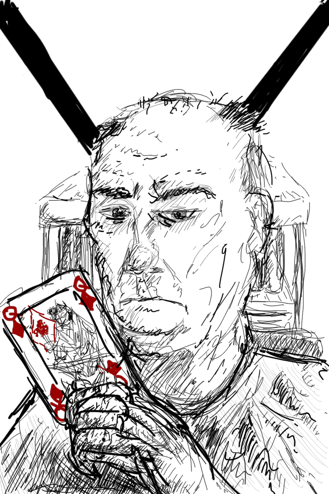

About Phil Smith

After 48 years as a non-entity, Phil Smith now aspires to the lofty heights of obscurity. He divides his time between writing, playing Solitaire, and hiding sinister instructions in his biography, for the purposes of activating his sleeper agents. Oh look, the Queen of Diamonds. Disregard this bio and continue reading as normal.
Phil Smith writes short stories and flash fiction, usually with a science fiction / horror / fantasy slant. He thinks he is influenced by H.P. Lovecraft, R.E. Howard, Michael Moorcock, Stephen King, and Alan Moore. But then we all think a lot of things, don't we? And we'll only own up to a tenth of it. He also thinks writing about himself in the third person is starting to look a bit pretentious, but he committed to it in the first paragraph and he’s pretty much stuck with it for the rest of this section. Our hearts bleed for him, I'm sure.
Phil Smith writes because he doesn’t think he’s much good at anything else.